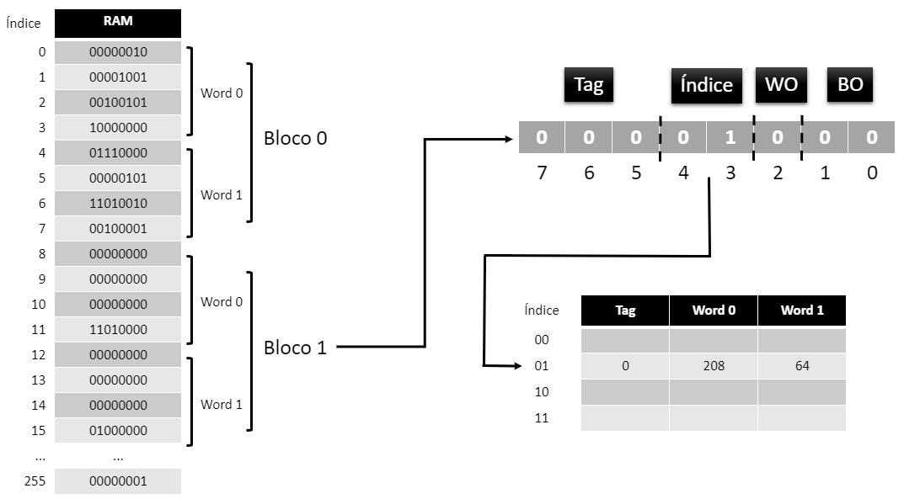

FUNÇÕES DE MAPEAMENTO
Como mapear um dado da memória princial na memória cache?
Funções de mapeamento são as
estratégias para escolha de onde os dados trazidos da memória
principal serão carregados na memória cache. Elas são extremamente
necessárias, visto que a memória cache tem capacidade menor do que a
memória RAM.
Para o cálculo do endereço da memória
cache onde os blocos serão colocados, estas funções realizam a
divisão dos bits do endereço da primeira palavra do bloco na memória
principal em alguns campos, sendo que o endereço é dividido,
principalmente, entre
byte offset,
word offset
e
tag. Podem haver outros campos na divisão, mas estes dependem de qual
função de mapeamento foi escolhida e serão mostrados em cada uma
delas.
Existem três funções de mapeamento,
sendo elas a de
mapeamento direto,
mapeamento associativo total e
mapeamento associativo por conjunto. Para
exemplificação das funções de mapeamento a seguir, suponha que
qualquer endereço da memória principal tenha 8 bits, que a palavra
utilizada pelo processador seja de 4 bytes, um bloco tenha 2
palavras e que a memória cache tenha tamanho para 4 blocos.
MAPEAMENTO DIRETO
Todo bloco da memória principal é
mapeado em um único endereço para a memória cache. O endereço onde o
bloco vai ser mapeado na memória cache é dado pela seguinte
expressão:
i = j mod b
Onde
"i" é o número do bloco da memória cache,
"j" o número do bloco na memória principal e
"b" o número de blocos da memória cache.
A divisão do endereço do bloco na
memória RAM fica da seguinte forma:
Ilustração
da divisão do endereço da memória para o mapeamento direto
Como a palavra só tem 4 bytes, é
necessário apenas 2 bits para se referir a todos os bytes presentes
nela. Selecionamos, então, os 2 bits
menos significativos do endereço para serem o
byte offset. Como o bloco tem 2 palavras, é necessário apenas
1 bit do endereço para se referir a todas as palavras presentes nele
e, para isso, pegamos o próximo bit menos significativo que ainda
não foi utilizado e usamos ele para indicar o word offset.
Como a operação de mod 4 (quantidade de blocos da cache) dos valores
do endereço vai dar no máximo 3, os próximos 2 bits do endereço
serão utilizados para indicar qual o
index (endereço da cache) em que o bloco vai ser
colocado. O resto dos bits do endereço que não foram utilizados até
o momento serão reservados para a tag do bloco. Segue exemplo de uma
simulação do mapeamento de um bloco da memória principal na cache:
Mapeamento
do bloco 2 da memória principal em uma memória cache que utiliza a
função de mapeamento direto
Esse tipo de mapeamento tem vantagens
o baixo custo e simplicidade na implementação e como desvantagens
tem o fato de que como cada bloco só pode ser mapeado em uma única
posição na cache, caso blocos distintos acabem tendo de ser levados
à memória cache e sejam mapeados na mesma posição, leva à realização
de várias trocas naquela posição o que acaba levando a baixa
taxa de acerto, logo a um baixo desempenho do processador.
MAPEAMENTO ASSOCIATIVO TOTAL
Nesse mapeamento, todo bloco da
memória principal pode ser mapeado em qualquer endereço de bloco na
memória cache.
A divisão do endereço do bloco na
memória RAM fica da seguinte forma:
Ilustração
da divisão do endereço da memória para o mapeamento associativo total
Como a palavra só tem 4 bytes é
necessário apenas 2 bits para se referir a todos os bytes presentes
nela, então selecionamos os 2 bits menos significativos do endereço
para serem o byte offset. Como o bloco tem 2 palavras é necessário
apenas 1 bit do endereço para se referir a todas as palavras
presentes nele, para isso pegamos o próximo bit menos significativo
que ainda não foi utilizado, e usamos ele para indicar o word
offset. O resto dos bits do endereço que não foram utilizados até o
momento serão a tag do bloco. Segue exemplo de uma simulação do
mapeamento de um bloco da memória principal na cache:
Mapeamento
do bloco 2 da memória principal em uma memória cache que utiliza a
função de mapeamento total
Esse tipo de mapeamento tem vantagem o
fato de não trazer um bloco diferentes da memória RAM para o mesmo
lugar na memŕoia cache diminuindo assim o número de trocas a serem
feitas na cache e como desvantagens tem o fato de que o circuito
para a verificação se um bloco está ou não na cache é bem complexo,
pois compara todas as tags presentes na cache simultaneamente com a
tag do bloco buscado buscado.
MAPEAMENTO ASSOCIATIVO POR CONJUNTOS
Nesse mapeamento a memória cache é
dividida em n conjuntos com k blocos cada. E o bloco da memória
principal é colocado em um dos conjuntos da cache da mesma forma que
no mapeamento direto, ou seja, ele sempre é colocado no mesmo
conjunto da memória cache, entretanto o bloco do conjunto onde ele é
colocado pode mudar, pois segue a mesma ideia do método associativo
total. Para o exemplo a seguir, considere uma cache com 2 conjuntos
e cada conjunto contendo 2 blocos.
A divisão do endereço do bloco na
memória RAM fica da seguinte forma:
Mapeamento
do bloco 2 da memória principal em uma memória cache que utiliza a
função de mapeamento total
Como a palavra só tem 4 bytes é
necessário apenas 2 bits para se referir a todos os bytes presentes
nela, então selecionamos os 2 bits menos significativos do endereço
para serem o byte offset. Como o bloco tem 2 palavras é necessário
apenas 1 bit do endereço para se referir a todas as palavras
presentes nele, para isso pegamos o próximo bit menos significativo
que ainda não foi utilizado, e usamos ele para indicar o word
offset. Como essa cache só possui 2 conjuntos é necessário apenas 1
bit para se referir a qualquer um deles, então pega-se o próximo bit
não utilizado para representar o set (conjunto da cache). O resto
dos bits do endereço que não foram utilizados até o momento serão a
tag do bloco. Segue exemplo de uma simulação do mapeamento de um
bloco da memória principal na cache.
Mapeamento
do bloco 2 da memória principal em uma memória cache que utiliza a
função de mapeamento total:
Esse tipo de mapeamento combina
vantagens das duas funções de mapeamento vistas anteriormente e como
desvantagens tem o fato de que o circuito para a verificação se um
bloco está ou não na cache é mais simples que o circuito utilizado
para a mesma finalidade no mapeamento associativo total, mas ainda
continua sendo complexo, pois compara todas as tags presentes em um
conjunto da cache simultaneamente com a tag do bloco buscado.
Como o mapeamento associativo por
conjunto pode-se implementar os outros dois tipos de mapeamento.
Para implementar o direto com ele o número de conjuntos deve ser
igual ao número de blocos que a memória cache suporta e cada
conjunto deve ter apenas um bloco. Já para implementar o mapeamento
associativo total é necessário que o haja apenas um conjunto e que
ele contenha todos os blocos suportados pela cache.
 Sequencia de passos para a execução do Write Back e Write
Allocate
Sequencia de passos para a execução do Write Back e Write
Allocate
 Sequencia de passos para a execução do Write Through e Write
No-Allocate
Sequencia de passos para a execução do Write Through e Write
No-Allocate